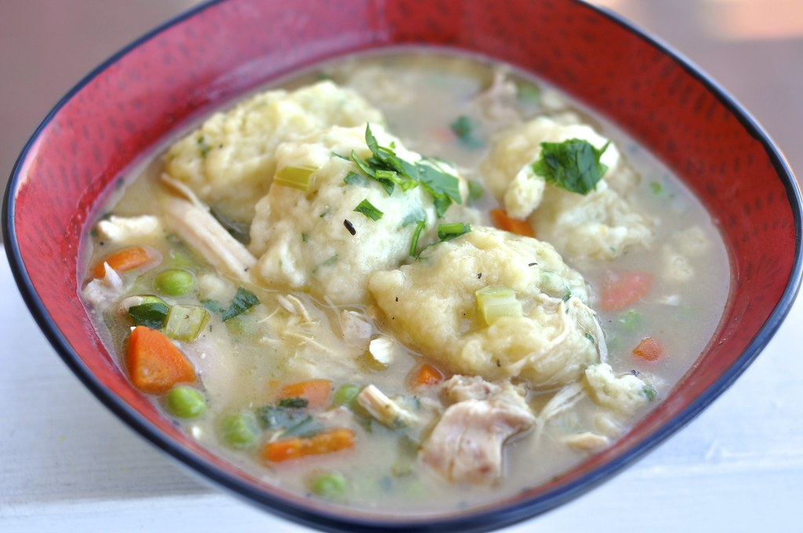

Chicken Stew With Dumplings
Home

Image of Chicken Stew With Dumplings
alt="Picture of chicken stew with dumplings" height="100" width="100">
This recipe makes a hearty chicken stew by simmering chicken,
vegetables, and broth into a thick, comforting base, then adding
spoonfuls of dough that cook directly in the stew to form
soft dumplings. The result is a rich, one-pot meal where the dumplings
both cook through and help thicken the stew into a creamy, filling dish.
Ingredients
Chicken Stew:
- 1 (3pound) rotisserie chicken
- 2 tablespoons butter
- 1 onion, diced
- 2 ribs celery, sliced thin
- 2 tablespoons all-purpose flour
- 2 (14.5 ounce) cans chicken broth
- 3/4 pound new potatoes, cut into 1/2-inch dice
- 2 cups frozen mixed vegetables
- 1 teaspoon salt
- 1/2 teaspoon ground black pepper
- 1/2 teaspoon dried basil
- 1/4 teaspoon dried thyme
Dumplings:
- 1 1/2 cups all-purpose-flour
- 2 teaspoons baking powder
- 1/2 teaspoon salt
- 3 tablespoons cold butter, cubed
- 3/4 cup milk, or more as needed
- 2 tablespoons dried dill
Directions
-
To prepare the stew: Debone rotisserie chicken; cut meat into
chunks or shred. Set aside.
-
Melt butter in a large Dutch oven over medium heat; cook and stir
onion and celery in hot butter until soft, about 10 minutes.
Sprinkle in flour and whisk continuously to make a thick roux,
about 2 minutes. Slowly pour in broth, whisking to remove any
lumps. Add potatoes, frozen vegetables, salt, black pepper, basil,
and thyme. Cover and cook over medium heat until vegetables are
tender, 15 to 20 minutes. Stir in chicken meat and continue to
simmer.
-
Meanwhile, make the dumplings: Combine flour, baking powder,
and salt in a large bowl; cut in butter with 2 knives or a
pastry blender until mixture resembles coarse crumbs. Stir in
milk and dill until dough comes together.
-
Drop rounded tablespoonfuls of dough into simmering stew. Cook,
uncovered, for 10 minutes. Cover and cook until dumplings are tender,
8 to 10 minutes more.